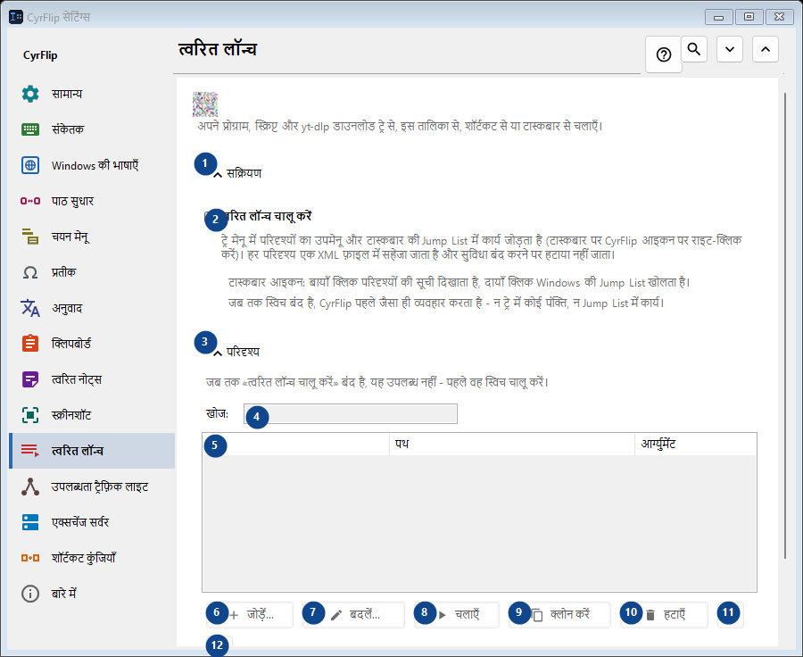
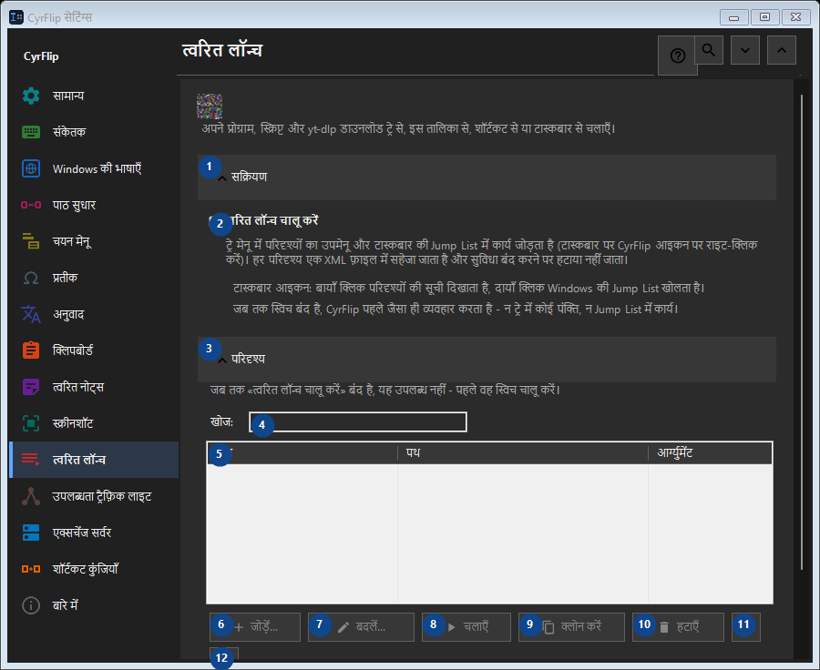

त्वरित लॉन्च
इसका उपयोग
अपने प्रोग्राम, स्क्रिप्ट और yt-dlp डाउनलोड ट्रे से, इस तालिका से, शॉर्टकट से या टास्कबार से चलाएँ।


उपयोग का क्रम
सेटिंग तुरंत लागू होती हैं। कोई अनिवार्य क्रम नहीं है; नीचे दिए समूहों का उपयोग करें।
तत्व
1. सक्रियण
बताई गई कार्रवाई के लिए इस आदेश का उपयोग करें। स्वीकार करने से पहले पुष्टि पढ़ें।
आपके शॉर्टकट2. त्वरित लॉन्च चालू करें
ट्रे मेनू में परिदृश्यों का उपमेनू और टास्कबार की Jump List में कार्य जोड़ता है (टास्कबार पर CyrFlip आइकन पर राइट-क्लिक करें)। हर परिदृश्य एक XML फ़ाइल में सहेजा जाता है और सुविधा बंद करने पर हटाया नहीं जाता।
आपके शॉर्टकट3. परिदृश्य
बताई गई कार्रवाई के लिए इस आदेश का उपयोग करें। स्वीकार करने से पहले पुष्टि पढ़ें।
आपके शॉर्टकट4. खोज
जब तक «त्वरित लॉन्च चालू करें» बंद है, यह उपलब्ध नहीं - पहले वह स्विच चालू करें। यह तत्व अभी उपलब्ध नहीं है। पहले सुविधा चालू करें या कोई प्रविष्टि चुनें।
आपके शॉर्टकट5. त्वरित लॉन्च
जब तक «त्वरित लॉन्च चालू करें» बंद है, यह उपलब्ध नहीं - पहले वह स्विच चालू करें। यह तत्व अभी उपलब्ध नहीं है। पहले सुविधा चालू करें या कोई प्रविष्टि चुनें। नाम / पथ / आर्ग्युमेंट / कार्य फ़ोल्डर / एडमिन / शॉर्टकट
आपके शॉर्टकट6. जोड़ें...
जब तक «त्वरित लॉन्च चालू करें» बंद है, यह उपलब्ध नहीं - पहले वह स्विच चालू करें। यह तत्व अभी उपलब्ध नहीं है। पहले सुविधा चालू करें या कोई प्रविष्टि चुनें।
आपके शॉर्टकट7. बदलें...
जब तक «त्वरित लॉन्च चालू करें» बंद है, यह उपलब्ध नहीं - पहले वह स्विच चालू करें। यह तत्व अभी उपलब्ध नहीं है। पहले सुविधा चालू करें या कोई प्रविष्टि चुनें।
आपके शॉर्टकट8. चलाएँ
जब तक «त्वरित लॉन्च चालू करें» बंद है, यह उपलब्ध नहीं - पहले वह स्विच चालू करें। यह तत्व अभी उपलब्ध नहीं है। पहले सुविधा चालू करें या कोई प्रविष्टि चुनें।
आपके शॉर्टकट9. क्लोन करें
जब तक «त्वरित लॉन्च चालू करें» बंद है, यह उपलब्ध नहीं - पहले वह स्विच चालू करें। यह तत्व अभी उपलब्ध नहीं है। पहले सुविधा चालू करें या कोई प्रविष्टि चुनें।
आपके शॉर्टकट10. हटाएँ
जब तक «त्वरित लॉन्च चालू करें» बंद है, यह उपलब्ध नहीं - पहले वह स्विच चालू करें। यह तत्व अभी उपलब्ध नहीं है। पहले सुविधा चालू करें या कोई प्रविष्टि चुनें।
आपके शॉर्टकट11. ऊपर ले जाएँ
जब तक «त्वरित लॉन्च चालू करें» बंद है, यह उपलब्ध नहीं - पहले वह स्विच चालू करें। यह तत्व अभी उपलब्ध नहीं है। पहले सुविधा चालू करें या कोई प्रविष्टि चुनें।
आपके शॉर्टकट12. नीचे ले जाएँ
जब तक «त्वरित लॉन्च चालू करें» बंद है, यह उपलब्ध नहीं - पहले वह स्विच चालू करें। यह तत्व अभी उपलब्ध नहीं है। पहले सुविधा चालू करें या कोई प्रविष्टि चुनें।
आपके शॉर्टकट13. निर्यात...
जब तक «त्वरित लॉन्च चालू करें» बंद है, यह उपलब्ध नहीं - पहले वह स्विच चालू करें। यह तत्व अभी उपलब्ध नहीं है। पहले सुविधा चालू करें या कोई प्रविष्टि चुनें।
आपके शॉर्टकट14. आयात...
जब तक «त्वरित लॉन्च चालू करें» बंद है, यह उपलब्ध नहीं - पहले वह स्विच चालू करें। यह तत्व अभी उपलब्ध नहीं है। पहले सुविधा चालू करें या कोई प्रविष्टि चुनें।
आपके शॉर्टकट15. OneClickRunner से आयात करें...
जब तक «त्वरित लॉन्च चालू करें» बंद है, यह उपलब्ध नहीं - पहले वह स्विच चालू करें। यह तत्व अभी उपलब्ध नहीं है। पहले सुविधा चालू करें या कोई प्रविष्टि चुनें।
आपके शॉर्टकट